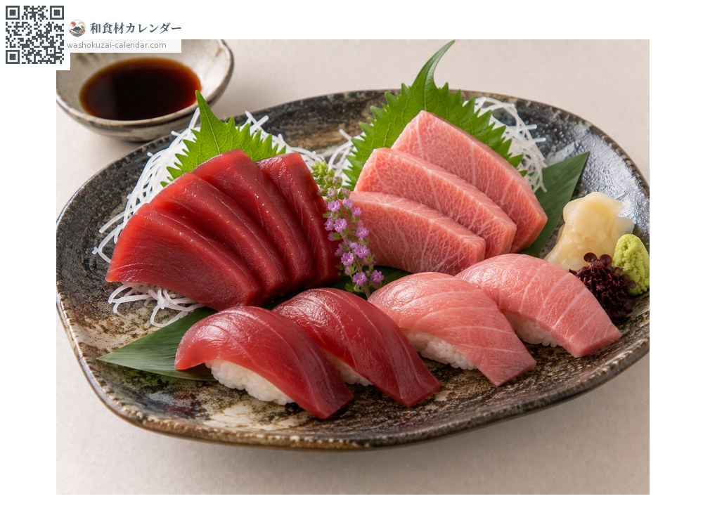
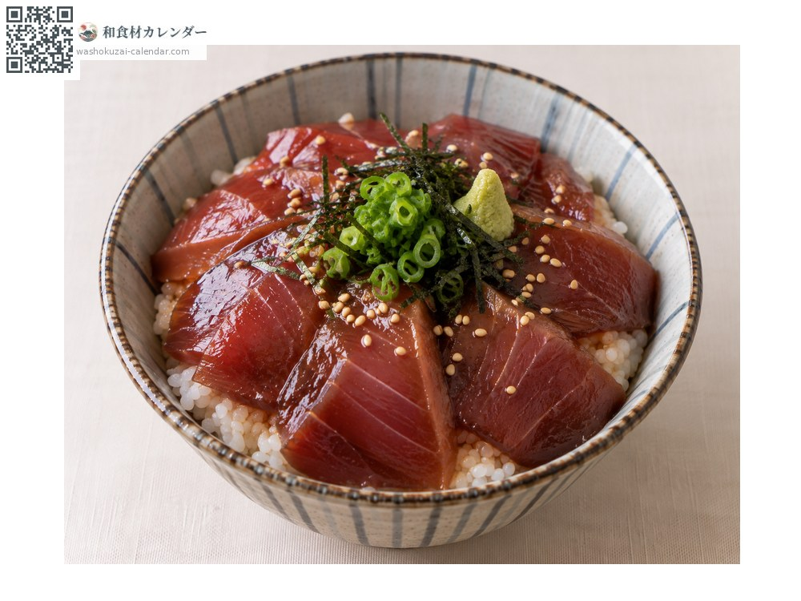
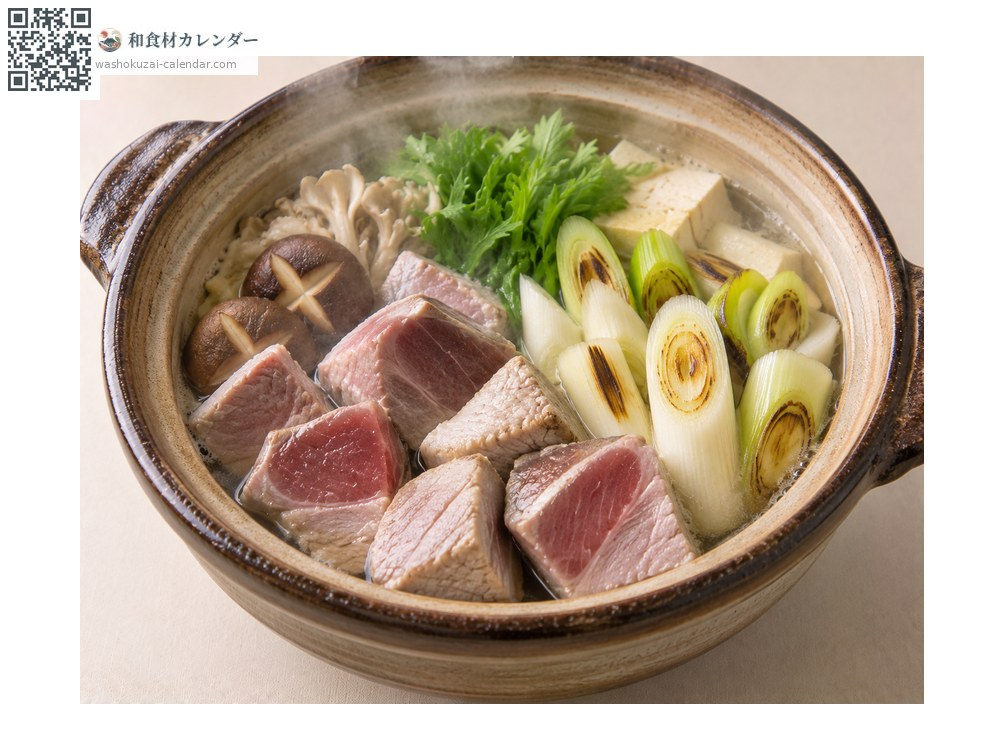
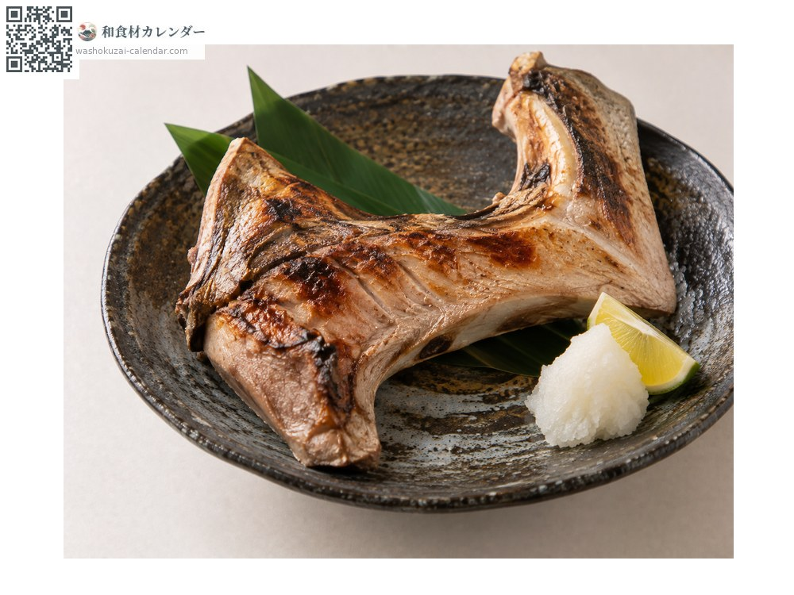

อาหารทะเล
ปลาทูน่าครีบน้ำเงิน
クロマグロ くろまぐろ kuromaguro
ชื่ออื่นkuromaguro, honmaguro, maguro
อร่อยที่สุดในเดือน ม.ค., ก.พ., พ.ย., ธ.ค.

ช่วงที่อร่อยที่สุด
ม.ค.
ก.พ.
มี.ค.
เม.ย.
พ.ค.
มิ.ย.
ก.ค.
ส.ค.
ก.ย.
ต.ค.
พ.ย.
ธ.ค.
ช่วงอร่อยที่สุดมีจำหน่าย
วิธีปรุง

ซาชิมิและซูชิ
แต่ละส่วนรสต่างกัน ทั้งอากามิ ชูโทโร และโอโทโร

หมักซีอิ๊วราดข้าว
หมักในซีอิ๊ว เหมาะกับเนื้อแดงอากามิ

หม้อไฟทูน่ากับต้นหอม
ตุ๋นเนื้อหั่นชิ้นกับต้นหอม เป็นอาหารแบบเอโดะ

คอปลาย่างเกลือ
โรยเกลือแล้วย่าง เนื้อติดกระดูกอร่อยที่สุด
วิธีเลือก
เนื้อแดงอากามิควรสีสดและเส้นใยละเอียดสม่ำเสมอ ส่วนโทโรควรมีลายมันขนานกัน
วิธีเก็บรักษา
แช่เย็นควรกินวันเดียวกัน หากแช่แข็งให้แข็งตัวเร็วที่สุดและละลายเฉพาะส่วนที่จะกิน
แหล่งผลิตหลัก
เกร็ดน่ารู้
การตกเบ็ดทีละตัวที่โอมะ จังหวัดอาโอโมริ มีชื่อเสียงมาก ปัจจุบันเพาะเลี้ยงครบวงจรได้แล้ว ช่วยลดภาระต่อทรัพยากรธรรมชาติ